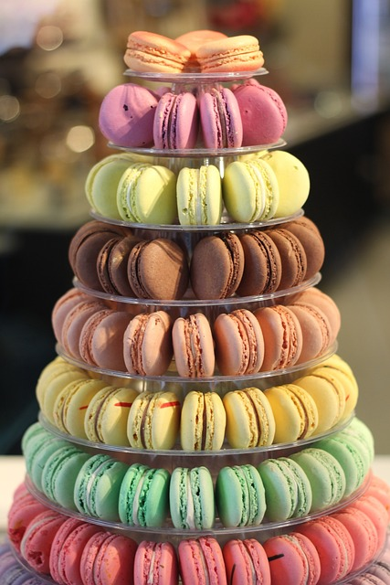
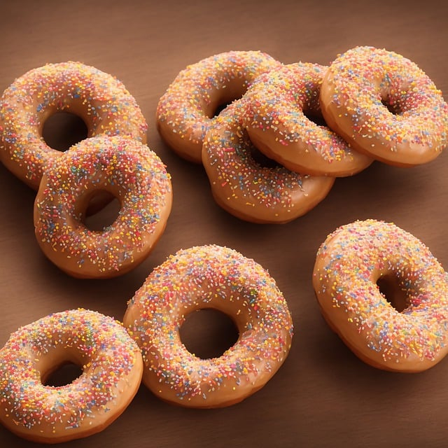
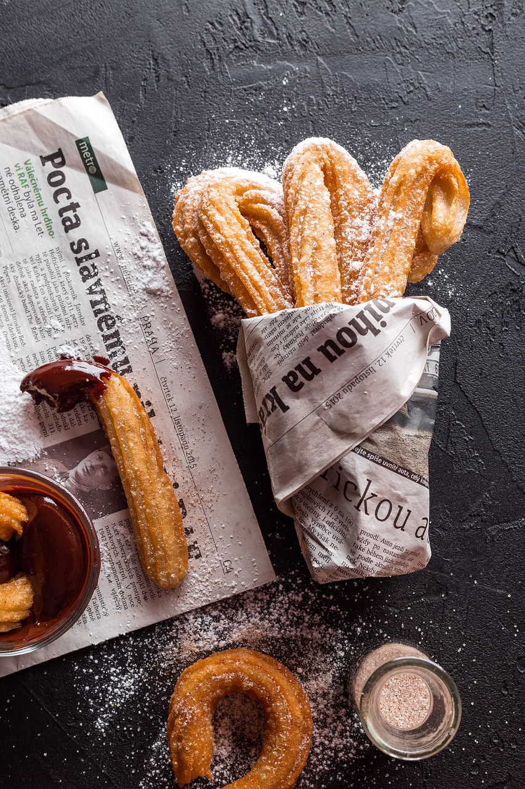
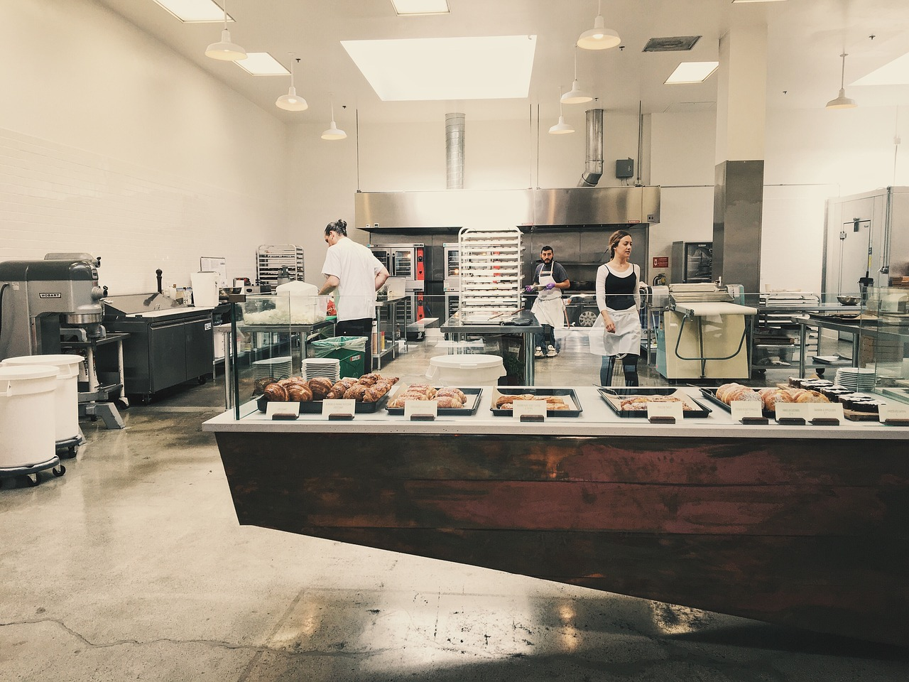
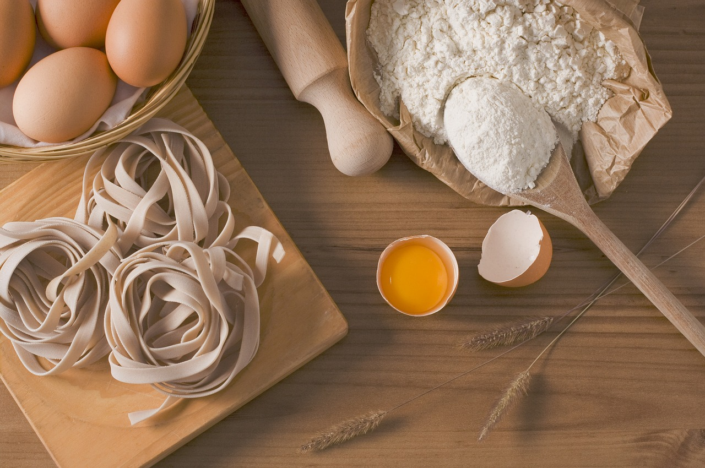

The Baker's Dozens started as a group of 13 students that just wanted to cook up various pastries and with the help of school staff they began an after-school club.
Slowly overtime it turned into a school bakery that began selling all sorts of pastries becoming a part-time job that students can sign up for.
The club also still runs offering a chacne to learn baking, leading a business and teamwork.
The Baker's Dozens is a bakery that was built within the walls of Ridge Meadow High. We serve delicious pastries with the support of cafeteria staff.
We also offer part-time jobs & work with our school's home economics class to teach you how to make these treats yourself.




Support from the School Cafeteria Staff

Free baking/cooking lessons
Easy job applications
Employee discounts